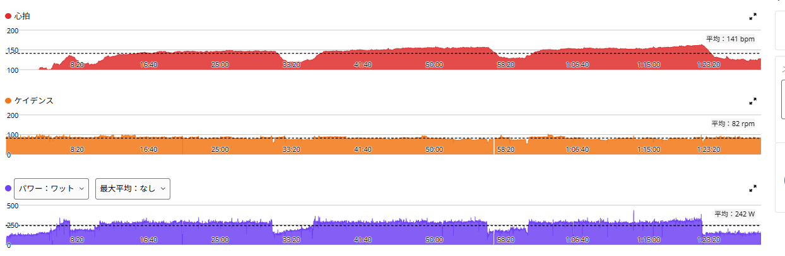

SST20分×3本。それでも前より楽だった――SSTが少し変わってきた日
今日はローラーでSST20分×3本。外を走りに行きたい気持ちもあったが、最終的には室内でいつものメニューにした。目標は、ようやく揃えられるようになってきた270W台を今回も維持すること。ところが終わってみると、274W、280W、280W。3日前の記事で「いきなり280Wへ上げるつもりはない」と書いたばかりなのに、である。しかも体感は、10月27日や30日よりずっと楽だった。

約48km・NP258W・TSS116
- 全体47.91km / 1時間28分02秒 / 運動量1,277kJ
- 負荷平均242W / NP258W / IF0.894 / TSS116.4 / 20分最大281W / FTP設定289W
- 心拍・回転平均141bpm / 最大164bpm / 平均82rpm
- 1本目20分 / 274W / 心拍平均143bpm / 85rpm
- 2本目20分 / 280W / 心拍平均152bpm / 81rpm
- 3本目20分 / 280W / 心拍平均154bpm / 80rpm

レストは約5分。280WはFTP289Wの約97％で、もはやSSTというより閾値にかなり近い。
出力は上がったのに、前より楽だった
| 日付 | 1本目 | 2本目 | 3本目 |
|---|---|---|---|
| 10月27日 | 270W・147bpm | 実質270W前後・152bpm | 257W・150bpm |
| 10月30日 | 270W・142bpm | 271W・146bpm | 274W・149bpm |
| 今日 | 274W・143bpm | 280W・152bpm | 280W・154bpm |
10月27日は3本目が257Wまで落ちて、終わった後の全身の疲労もかなり大きかった。あの日が一番きつかった。10月30日は3本揃えられてうれしかったが、これも相当きつかった。今日は出力が上がっているのに、メニュー中の余裕は前の2回より大きく、終わってからのダメージもそこまで大きくない。
心拍は10月30日より1〜6拍高い。数字だけ眺めていたら、楽だったという違いは見落とすところである。
3本目は、最後に上げた
3本目は、最初から最後まで平均280Wを狙っていたわけではない。感覚では残り4分くらいまでは275W前後で、そこから出力を上げて、20分の平均を280Wまで持っていった。前回までは3本目をどうにか維持するだけで精いっぱいだったので、最後に引き上げる力が残っていたのは大きい。
何が変わったのかは、わかんない！
思い当たるのは2つ。1つは前日のアクティブレストで、昨日はTSS42の外ライドのあと、脚が軽く感じていた。もう1つはSSTへの慣れで、20分×3本を繰り返すうちに、疲労した状態で踏み続ける感覚に少しずつ体が適応してきたのかもしれない。ただ、どちらがどれくらい効いたのかは分からないし、1回の好結果だけでFTPが何W上がったとも言えない。
次は、280Wが普通になるか
同じSST20分×3本でも、ここ数回でずいぶん印象が変わった。何か一つだけで説明できる変化ではないと思う。それでも、自分の中で少しずつ積み上がっているものがあると感じられた。
当面は、280W前後の20分×3本がどのくらい安定して再現できるかを見ていく。無理に毎回出力を上げるのではなく、きつい日も余裕のある日も含めて、状態を見ながら積み重ねる。目標のローラー1時間300Wは、まだ簡単ではない。でも今日は、その目標に向かって少し階段を上がれた気がした。